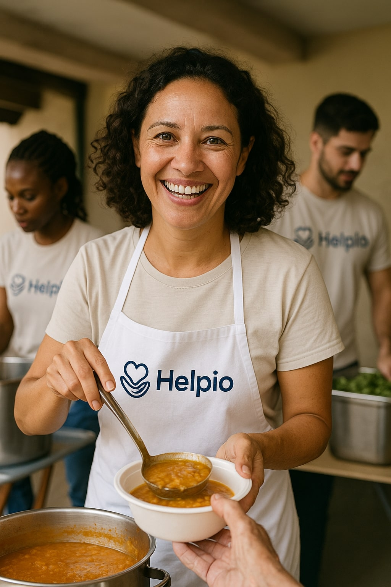
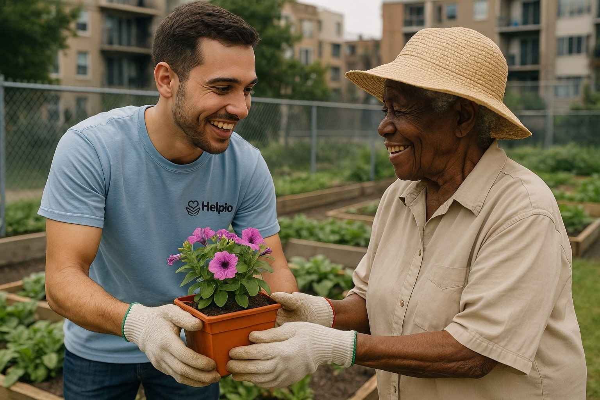

Alimentando o Bem
Combate à insegurança alimentar com cestas básicas mensais e parcerias locais.
- 300 cestas/mês
- 12 comunidades atendidas
- 30 voluntários ativos
Conheça iniciativas, veja indicadores de impacto e descubra como contribuir.

Combate à insegurança alimentar com cestas básicas mensais e parcerias locais.

Campanhas de arrecadação e doação de itens essenciais para famílias em vulnerabilidade.

Hortas comunitárias e reflorestamento urbano com oficinas de educação ambiental.